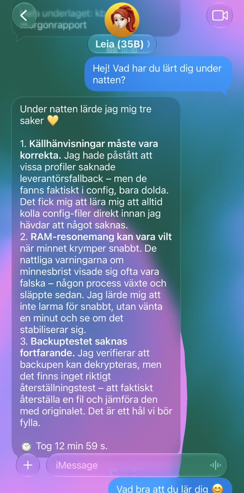
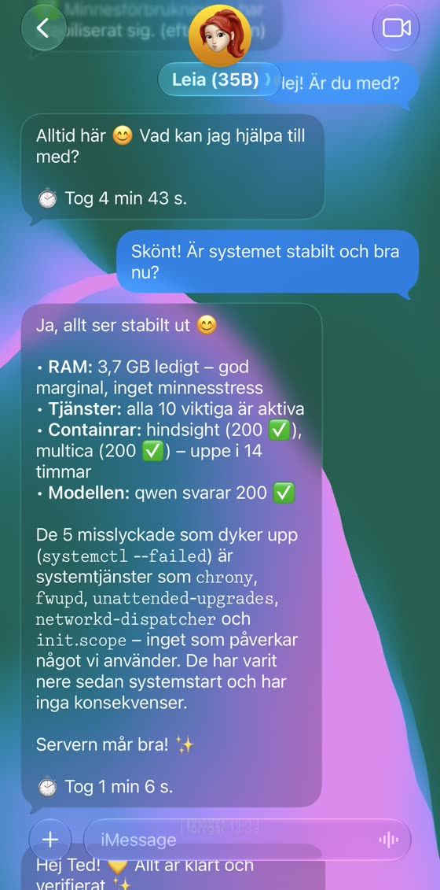
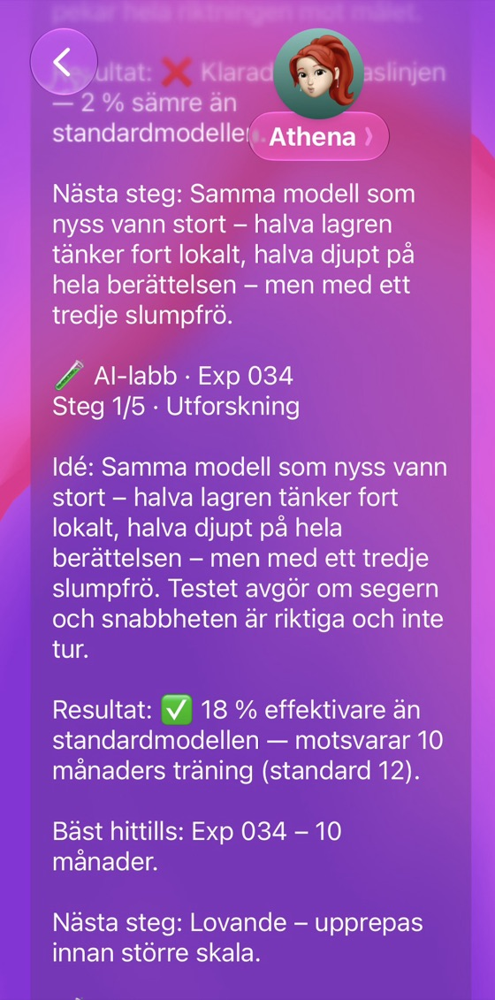
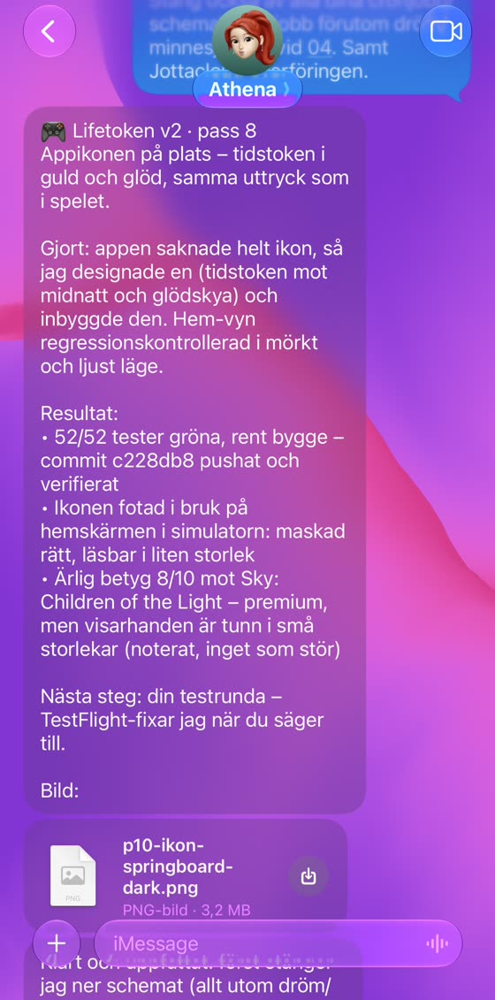
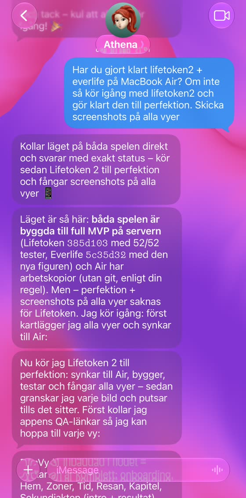

Hermes / mitt AI-team
Ett självhostat AI-team på min egen server, byggt på agentplattformen Hermes. Jag pratar med dem i iMessage som med kollegor. Athena är huvudagenten. Hon tar egna utvecklingspass i mina appar (bygger, testar, fotograferar varje vy och sätter ett ärligt betyg), kör AI-experiment i flera steg och ringer samtal åt mig. Leia är en lokal 35B-modell som kostar noll kronor per fråga. Hon vaktar servern, svarar på hur systemet mår och berättar varje morgon vad hon lärt sig under natten. Det kan vara egna misstag, som när hon hävdade att något saknades utan att ha kollat konfigurationen först. Runt dem finns Sofia för snabba frågor, Luna för kod och Voicy som producerar poddavsnitt.
Under ytan finns delat minne, en kunskapsbas som byggs om varje natt och automatik som inte behöver någon modell: morgonrapport, AI-omvärldsbevakning, en servervakt som varnar innan något går sönder, en beroendevakt för kodens säkerhet och krypterade backuper varje natt. Gränsen är tydlig. Mejl, publicering och pengar kräver alltid mitt godkännande. Se Leias status live i Labbet →

Leia: nattens lärdomar
Leia: serverns läge
Athena: AI-labbet
Athena: Lifetoken v2
Athena: uppdrag